从我还是个青少年、开始摆弄神经网络的时候起，我就一直怀揣着一个梦想，也许有一天能构建一个像我一样聪明，或者说像普通人一样聪明的人工智能系统，这是人工智能最鼓舞人心的梦想之一。00:02
我至今仍怀揣着这个梦想，但我认为通往那里的道路并不清晰，而且可能非常艰难。00:20
我不知道这仅仅是需要几十年的时间，我们能否在有生之年看到突破，还是说可能需要几个世纪，甚至更长的时间才能实现。00:30
不过，我们来看看这个 AGI，也就是通用人工智能的梦想是什么样的，并稍微推测一下，未来某天实现它的可能路径有哪些，这些路径不清晰，也很艰难。00:41
我认为，围绕或者说通用人工智能，一直有很多不必要的炒作。00:59
其中一个原因可能是，人工智能实际上包含两种截然不同的东西。01:06
一种是 ANI，即狭义人工智能。01:13
这是一种只做一件事、完成一项狭义任务的人工智能系统，有时做得极其出色，并能带来巨大的价值，比如智能音箱、自动驾驶汽车、网络搜索，或者应用于农业、工厂等特定领域的人工智能。01:18
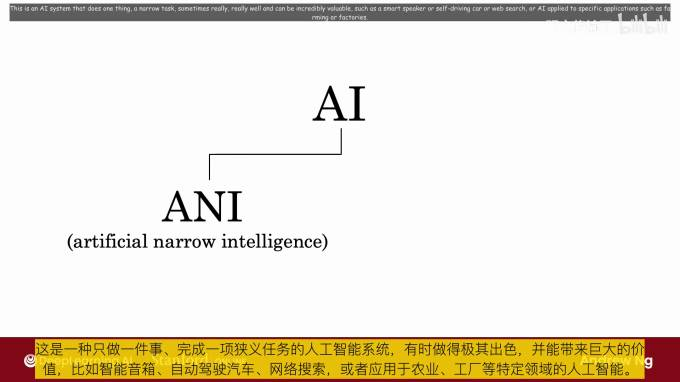
在过去几年里，ANI 取得了巨大的进步，并且正如你所知，正在当今世界创造巨大的价值。01:37
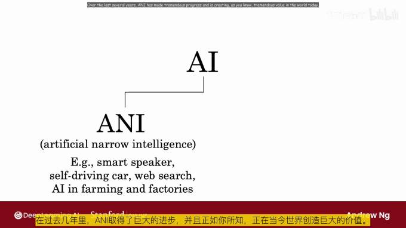
因为 ANI 是 AI 的一个子集，ANI 的快速进步在逻辑上意味着 AI 在过去十年里也取得了巨大的进步。01:47
AI 中还有一个不同的概念，那就是 AGI，通用人工智能，它寄托着构建能做任何普通人能做之事的人工智能系统的希望。T。01:59
尽管 ANI 取得了所有进步，并因此带动了 AI 的巨大进步，但我不确定我们在通往 AGI 的道路上真正取得了多少进步，如果算是有的话。02:11
我认为，ANI 的所有进步让人们正确地得出结论：AI 取得了巨大的进步。但这却导致一些人错误地认为，AI 的众多进步必然意味着通往 AGI 也取得了巨大进步。02:24
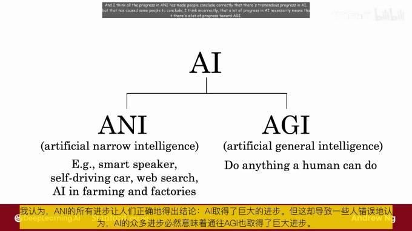
所以，如果你被问及 AI 和 AGI，有时你可能会发现，画这张图对于解释 AI 领域正在发生的一些事情，以及 AGI 方面为何会出现不必要的炒作，会很有用。02:43
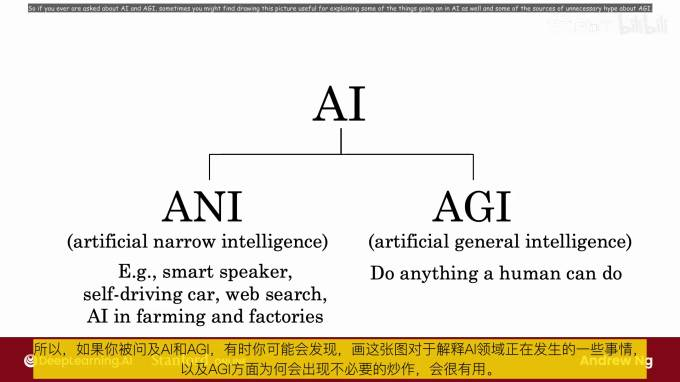
随着现代深度学习的兴起，我们开始模拟神经元。03:00
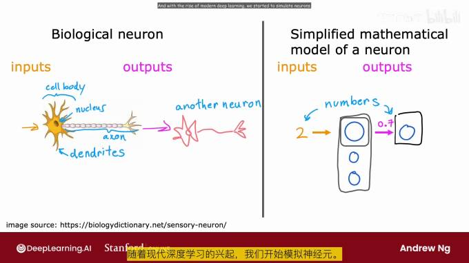
并且随着计算机乃至 GPU 的速度越来越快，我们甚至可以模拟更多的神经元。03:05
因此，我想很多年前就有这样一种模糊的希望：哎，要是我们能模拟很多，很多神经元就好了，然后我们就能模拟人脑或类似人脑的东西，从而造出真正智能的系统，对吧？03:14
很多神经元就好了，然后我们就能模拟人脑或类似人脑的东西，从而造出真正智能的系统，对吧？03:21
遗憾的是，事实证明事情并没有那么简单。03:29
我认为这有两个原因：首先，看看我们正在构建的人工神经网络，它们太简单了，一个逻辑回归单元，跟任何生物神经元所做的真的完全不一样。N。03:34
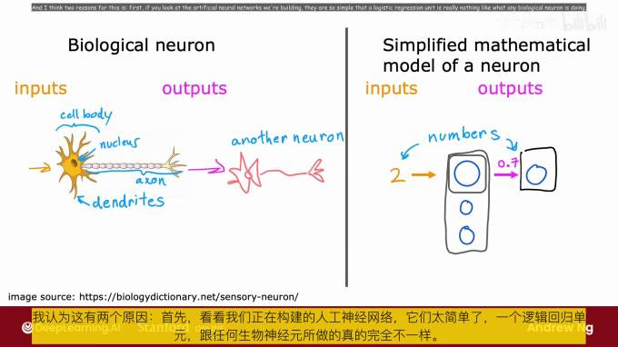
它比你或我大脑中的任何神经元所做的都要简单得多。03:51
第二，即使到了今天，我认为我们对于大脑如何运作几乎一无所知。03:57
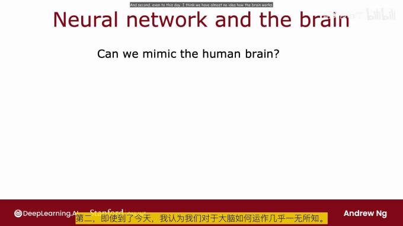
关于神经元究竟如何将输入映射到输出，仍然存在一些我们今天根本不知道的基本问题。04:04
所以，试图在计算机中模拟那个过程，更不用说用单个逻辑函数了，这与人类大脑实际工作方式的准确模型相去甚远。04:13
考虑到我们现在，乃至在可预见的未来，对人类大脑工作方式的理解都非常有限，我认为仅仅试图通过模拟人脑来通往 AGI，将是一条极其艰难的道路。04:24
话虽如此，我们有希望在有生之年看到 AGI 的突破吗？04:40
让我分享一些证据，至少对我自己而言，这些证据让我继续怀揣这个希望。04:48
有一些在动物身上完成的迷人实验表明，或者说强烈暗示，同一块生物脑组织能够执行极其广泛的。04:56
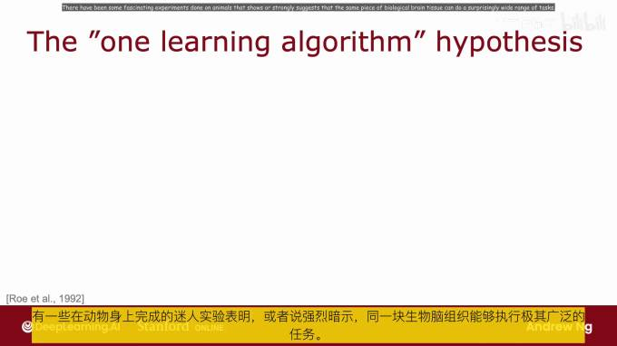
这催生了“单一学习算法假说”，即也许很多智能都源于一个或少数几个学习算法。只要我们能弄清楚这一个或少数几个算法是什么，或许有朝一日就能在计算机中实现它。05:11
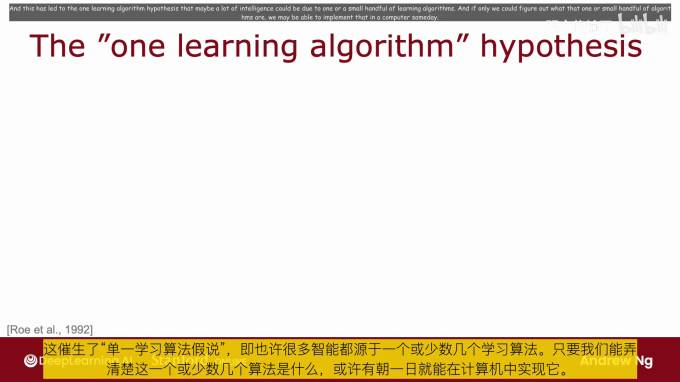
让我与你分享一下这些实验的一些细节。05:29
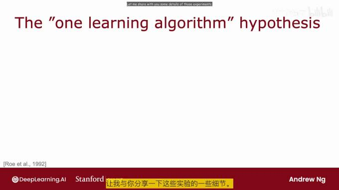
这是一个由等人取得的成果，你大脑的这块区域是听觉皮层。05:34
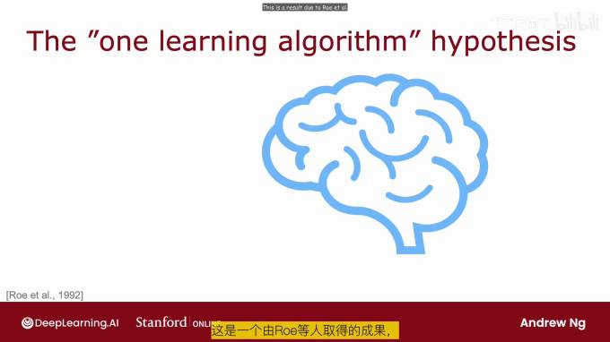
你的大脑通过神经连接，根据耳朵检测到什么声音，将来自耳朵的电脉冲信号传送到那个听觉皮层。05:44
事实证明，如果你重新连接动物的大脑，切断耳朵和听觉皮层之间的连接，转而将图像信号输入听觉皮层，那么听觉皮层就学会了“看”。N。05:56
所以，这块在大多数人脑中用来学习“听”的大脑区域，当输入不同的数据时，它反而学会了“看。06:14
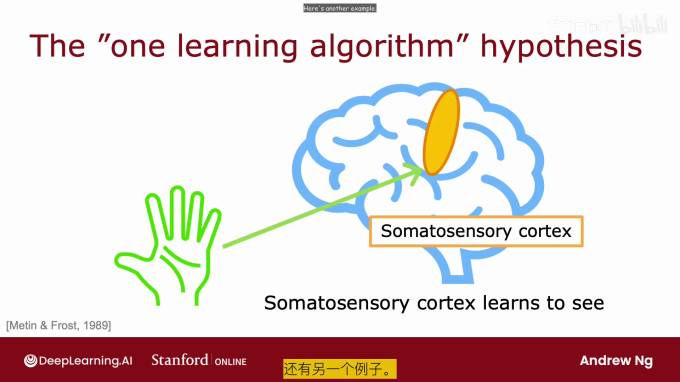
你大脑的这部分是体感皮层。06:26
体感是和触觉相关的处理触觉。06:30
如果你类似的重新连接大脑，切断触觉传感器到大脑那部分的连接，转而将图像信号输入，那么体感皮层就学会了“看”。06:34
因此，像这样的一系列实验表明，大脑中许多不同的部分，仅仅取决于它接收到什么数据，就能学会看、学会感觉、或者学会听，就好像存在一个，也许只有一个算法，仅仅依据输入的数据，就能学会相应地处理那个输入。06:48
人们已经构建了一些系统，用摄像头，可能戴在人的前额上，把图像映射成舌头上网格状的电压模式。07:09
通过将灰度图像映射为舌头上的电压模式，这可以帮助那些视力受损的人，即失明人士，学会用舌头“看”东西。07:21
或者还有一些关于人类回声定位或人体声呐的迷人实验。07:34
像海豚和蝙蝠这样的动物是用声呐来“看”的。07:40
研究人员发现，如果你训练人类发出咔哒声，并聆听这些声音如何从周围环境反射，人类有时能在某种程度上学会人类回声定位。07:45
我在斯坦福的研究实验室也曾经做过类似的东西。08:05
但如果你在腰间环绕一圈振动器，并用磁罗盘进行编程，使得比如说，最北边的振动器总是轻微地振动，那么你就会莫名地获得一种方向感，一些动物有这种能力，但人类没有。08:10
你走来走去，感觉就像是，你自然地就知道哪里是北。08:28
你不会觉得，哦，我腰上那个位置在振动。08:34
你会感觉，哦，我知道北边在哪。08:39
或者通过手术给青蛙植入第三只眼，它的大脑就学会了处理这个新的输入。08:43
诸如此类的各种实验表明，人类大脑的适应能力惊人。08:51
神经科学家说大脑具有惊人的“可塑性”，就是“适应性”的意思，能够处理各种匪夷所思的感官 a。08:57
那么问题来了：如果同一块大脑组织能学会看、学会触、学会感觉，甚至其他事情，那它用的是什么算法。09:07
我们能复制这个算法，并在计算机中实现吗？09:17
我确实为那些在这些实验中使用的青蛙和其他动物感到难过，尽管我认为得出的结论也非常引人入胜。09:21
所以，即使到了今天，我仍然认为，研究通用人工智能是当今时代最引人入胜的科学与工程难题之一。09:32
也许你将来会尝试。09:41
某天对它进行研究。09:44
然而，我认为避免过度炒作很重要。09:47
我不知道大脑是否真的只依赖一个或少数几个算法。即使真的如此，我也毫无头绪。09:51
而且我认为没有人知道那个算法是什么。10:00
也许我们能通过大量的努力工作，有朝一日发现它的一个近似算法。10:09
我依然觉得这是最迷人课题之一，闲暇时我仍常常漫无边际地思考它。10:16
也许有一天，你会是为这个问题做出贡献的那个人。10:23
所以，短期来看，我认为即使不追求 AGI，机器学习和神经网络也是非常强大的工具。10:29
即使不尝试一路构建到人类水平的智能，我想你也会发现，对于你可能构建的各种应用来说，神经网络是一套极其强大和有用的工具集。10:39
好了，这就是本周的必修视频内容。10:53
在此之后，我们还有几个选修视频，会稍微深入地探讨神经网络的高效实现。11:01
特别是在接下来的选修视频中，我想和你分享一些关于如何实现神经网络向量化实现的细节。11:10
所以希望你也去看看那些视频。11:19